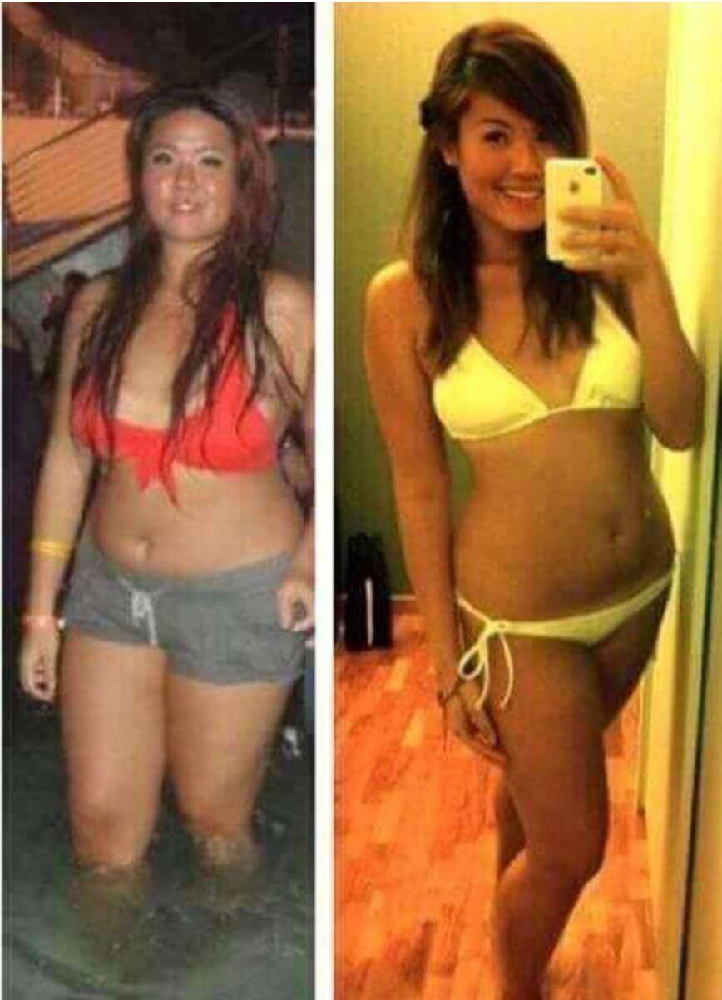

Saya dulu memiliki berat 120 kg dan saya pikir, saya tidak akan pernah langsing lagi. Sekarang berat badan saya 70 kg. Metode saya sangat sederhana.

Ini adalah kisah Agung Candrawan — seorang pria dengan berat badan 119 kg di usia 45’annya dan terancam masalah kesehatan yang sulit dan mahal untuk disembuhkan.
Agung sadar bahwa ia tidak boleh sampai menjadi pria gemuk yang menderita diabetes. Karena itulah, dia mencari jalan keluar masalahnya.
“Saya tahu saya harus berani melakukan hal ekstrem untuk memperbaiki hidup saya. Saya harus berusaha menormalkan berat badan karena saya sudah merasa sangat terganggu. Saya bahkan kesulitan menutup ritsleting jeans panjang XXL saya dengan ukuran pinggang 112-118 cm. Ukuran ini bahkan akan menjadi kekecilan dalam tak lama lagi. Saya juga selalu mengganti kancing baju secara rutin karena baju-baju saya tidak tahan akan beban oleh badan saya. Jika tidak diganti, pakaian yang saya kenakan mungkin bisa “meledak”.
Saya selalu mengalami kesulitan mencari pakaian yang bisa muat di badan saya. Kaos XXL biasa tidak akan muat; bagian bawah pakaian menjadi sangat ketat saat saya duduk. Akibatnya, saya sering merasa tidak nyaman saat tidur. Saat berbaring di sofa atau kasur, saya merasa seperti paus terdampar. Menyedihkan sekali bukan? Pakaian yang ketat ini juga membuat saya sering sesak nafas. Saya sering berpikir, apa yang bisa saya lakukan untuk memperbaiki kehidupan saya?”
Masa kanak-kanak saya memiliki peran mengapa kini saya seperti ini.
Saya tidak pernah berlari tanpa henti dan selalu berjalan lambat dan santai sepanjang hidup saya. Saya merasa sangat asing dengan kata “olahraga”. Saya tidak pernah berolahraga hingga berpeluh-peluh sepanjang hidup saya. Penyesalan selalu datang dibelakang, dan akhirnya kini saya mengerti pentingnya berolahraga.
Pada tahun 2018, berat badan saya mencapai 119 kg dan saya hampir terdiagnosa diabetes.
Saya akhirnya memutuskan untuk mengubah cara hidup saya. Saya kasihan dengan istri saya. Saya tidak ingin membuatnya menjanda karena suaminya terdiagnosa diabetes.
Saya memulai dengan diet yang biasa.
Semua diet bekerja dengan prinsip yang sama: jika kita mengonsumsi kalori lebih sedikit daripada kalori yang dibakar, berat badan akan turun.
Tapi, karena alasan yang tidak diketahui, berat badan saya malah kembali naik dan bertambah.
Setelah beberapa bulan menjalani diet, saya menyadari bahwa penurunan konsumsi kalori dan pembakaran kalori saja tidak cukup. Saya membutuhkan cara lain. Cara yang lebih aktif dan efektif.
Jadi, saya memutuskan untuk pergi ke gym. Walau dengan segenap usaha saya jalani, saya tidak mendapatkan hasil yang saya inginkan. Siksaan fisik dan psikologi yang saya dapat saat menjalaninya membuat saya depresi. Tanpa hasil yang jelas, gym sangat membatasi saya untuk melakukan hal yang saya senangi.
Saya mulai sering meminum miras. Berat badan yang berusaha saya turunkan dengan kerja keras pun kembali, malah bertambah 8 kg.
Hidup saya hancur berantakan. Pada akhirnya, saat istri saya meninggalkan rumah karena cara hidup saya, saya sadar kalau saya harus berjuang untuk diri sendiri.
Saya merasa terlahir kembali saat bertemu dengan seorang ahli psikoterapi. Saya terbayang betapa depresinya saya dulu: manusia payah dengan badan gemuk 120’an kg menangis meratapi kehidupannya. Saat itu saya menghapus air mata dengan sapu tangan, mengeluhkan betapa menyedihkannya kehidupan yang saya sedang jalani.
Tentu saja, masalah-masalah saya sudah jelas seperti apa. Tanpa dokter pun, saya paham bahwa saya menderita secara psikologis akibat kelebihan berat badan. Namun tetap saja, saya memerlukan bantuan seseorang untuk mendapatkan solusi dari masalah- masalah yang saya alami.
Dr. Restu Baruna yang kini telah menjadi dokter langganan saya mendengar segala keluh kesah saya, iapun memberikan saya sebuah solusi untuk masalah-masalah saya. Beliau tidak menyarankan saya menjalani pengobatan psikologis. Beliau menyuguhkan saya Stei Slim. Awalnya saya bingung dengan apa yang harus saya lakukan. Namun dengan arahan beliau, saya mengerti dengan kegunaannya.
Saat saya menerima pills ini, tidak terbayang di benak saya bahwa semuanya bisa semudah dan sesimpel mengonsumsi Stei Slim.
Tentu saja, saya meminta Dr. Restu untuk menjelaskan produk ini. Singkatnya, Stei Slim - adalah produk baru untuk penurunan berat badan. Produk ini sebaiknya diminum sesuai dengan instruksi yang diberikan. Kemudian yang terpenting lagi, kita tidak perlu melakukan diet apa pun.
Setelah itu, saya mencari informasi tentang produk ini dan menemukan artikel ilmiah dengan penjelasan detail mengenai Stei Slim. Setelah itu, saya tidak ragu lagi.
Tak pernah terbayangkan di benak saya bahwa proses penurunan berat badan bisa sangat mudah dan cepat!
Komposisi dari Stei Slim sangatlah unik! Karena percepatan dalam proses metabolisme dan ekskresi, berat badan kita bisa turun dengan cepat! Malahan, hanya produk ini yang saya butuhkan untuk menurunkan berat badan. Tidak ada gimik lain yang diperlukan.
Jika anda tertarik untuk membeli Stei Slim. Anda bisa memesan produknya secara online. Stei Slim belum dijual secara umum.
Saya mengunjungi situsnya dan memesan satu botol (selain botol yang diberikan dokter) Stei Slim. Proses pembeliannya sangat mudah karena tidak ada pembayaran di awal sehingga semua lebih mudah.
Saya tidak ingin menutupi fakta bahwa selama saya mengonsumsi Stei Slim, saya terus berolahraga seminggu sekali – untuk menjaga kesehatan saya (saya tidak ingin mengalami gejala diabetes karena dengan Stei Slim, saya bisa makan apa pun yang saya inginkan).
Setelah 2 minggu berlalu, saya terkejut dengan hasilnya – turun 8,6 kg! Saya tidak percaya ini terjadi pada tubuh saya. Berat badan saya turun berkilo-kilo dan tubuh saya mengecil serta terlihat lebih ideal di mata saya! Napas pendek yang biasa saya alami-pun sudah tidak terjadi lagi. Saya juga menjadi populer dikalangan para wanita. Sebenarnya ini rahasia, setelah mengonsumsi Stei Slim kejantananmu juga akan meningkat berkali lipat! Selain itu, yang terpenting adalah; saya tidak memiliki pantangan apa pun!!!
Bahkan pemalas seperti saya pun bisa menurunkan berat badan dengan cepat seperti ini!
Sebotol Stei Slim bisa cukup untuk 3 bulan!!
Dulu saya menghabiskan banyak uang untuk membeli pakaian. Ukuran baju saya berubah setiap 2 minggu. Awalnya saya memakai kaos ukuran XXL, kini dengan bangga saya bisa mengenakan kaos berukuran M..
20 April 2019, berat saya 70 kg – turun 49 kg dibandingkan sebelum saya depresi. Sekali lagi, semua ini terjadi berkat Stei Slim sehingga saya berhasil turun 49 kg.
Luar biasa, bukan?
Pengalaman menurunkan berat badan ini mengajarkan saya bahwa kita bisa memperbaiki kehidupan, separah apapun hancurnya dengan usaha yang sepadan. Saya merasa berada di puncak kejayaan. Saya tidak pernah merasa lebih nyaman dan bahagia dari sekarang! Satu-satunya tujuan dalam hidup saya adalah memperbaiki kesehatan fisik. Dan sekarang itu sudah tercapai!
Saya masih memikirkan masalah apa yang akan berada dalam daftar saya selanjutnya.
Saya ingin berkata kepada para pembaca sekalian bahwa kalian sebaiknya tidak menunda-nunda penurunan berat badan karena kalian tidak akan sadar jika berat badan kalian mungkin akan naik 10 kg dalam setahun. Saat kalian menyadarinya, semua sudah terlambat. Selain itu, penurunan berat badan dengan Stei Slim sangatlah mudah sampai- sampai kita tidak akan menyadari proses “turunnya” berat badan kita.
Tapi tentu saja – semua itu adalah pilihan kalian. Saya percaya bahwa setiap orang yang menderita karena kelebihan berat badan paling tidak harus mencobanya. Sebenarnya, semenjak produk ini bermunculan di pasaran – sulit untuk membeli produk yang asli, tetapi saya menulis artikel ini untuk memberi kalian kesempatan untuk mencobanya dan membantu orang lain. Sekarang, saya dapat melihat betapa bahagianya adik saya dan saya ingin semua orang di dunia ini bisa bahagia sepertinya pula. Terima kasih atas perhatiannya. Sebelum kalian pergi, saya ingin menunjukkan kalian surat ini:
Hai Agung!
Saya nggak bisa memercayainya! Saya bisa nurunin 1 kg besok paginya setelah minum satu dan sekarang belum ada 4 minggu saya udah turun 17,5 kg lagi! Terima kasih banyak udah ngebagiin cerita menyentuhmu! Saya suka semuanya terutama bagian penjelasan efektivitas Stei Slim di akhir-akhir.
Saya akui, awalnya saya ragu, tetapi saya pikir-pikir kenapa nggak nyoba paling nggak sehari dan liat apa yang terjadi besoknya dan WOW! Saya berharap bisa tau ini lebih awal. Kalau tau, saya mungkin bisa ngehindarin koma diabetik yang menakutkan itu. Tetapi berkat kamu, saya nggak lagi memerlukan obat dibetik dan akhirnya saya bisa muat make baju lama saya yang nggak pernah saya pakai lagi setelah umur saya 20an akhir.
Terima kasih banyak, Agung! Kamu udah ngubah hidup saya!
Salam sejahtera, Lin
Jadi, jika kalian tertarik, dengan senang hati saya umumkan bahwa perusahaan yang memproduksi produk inovatif ini menawarkan diskon 50 %. Tapi cepat! Penawaran ini terbatas!


Thomas
Sebuah prestasi luar biasa. Bagus!
Suka ‧ Balas ‧ 0 ‧ Saat ini
0 ‧ Saat ini
Bonita
Saya mendapat manfaat dari produk ini, saya mendapatkan diskon 50% dari harga awalnya, dan berhasil turun berat badan! recommended banget!
Suka ‧ Balas ‧ 5 ‧
5 ‧
Martin
Saya juga mencoba menurunkan berat badan meskipun faktor genetik membuat lebih susah turun. Ini sangat sederhana, saya sudah menceritakan metamorfosis saya di blog saya dan merekomendasikannya kepada semua orang :)
Suka ‧ Balas ‧ 3 ‧
3 ‧
Sofia
Udah banyak suplemen pelangsing yang saya beli, tapi hanya buang-buang uang saja. Tapi di sini, jujur, ini metode pertama yang berhasil. Saya hanya menggunakan satu minggu, lalu tiba-tiba nafsu makan berkurang dengan sendirinya. Saya makan lebih sedikit tetapi tetap lebih sehat dan merasa sangat ringan. Ga perlu repot-repot lagi mengatur asupan kalori. Dan saya sudah kehilangan lebih dari 4 kg dan selulit telah hilang, saya tidak sabar menunggu minggu keempat !!
Suka ‧ Balas ‧ 7 ‧ 9
7 ‧ 9
Fifi
Teman saya memesan suplemen ini sebulan yang lalu, kemudian tidak ada harga promo sehingga ia harus membayar penuh. Teman saya sangat bahagia, dia berkata jika efek dari Stei Slim ini sangat menakjubkan. Selagi masih ada harga promo, saya memutuskan untuk memesan suplemen ini dengan diskon 50%! Saya menganjurkan siapapun untuk memesan suplemen yang menakjubkan ini selagi harga promonya masih berlaku!
Suka ‧ Balas ‧ 21 ‧
21 ‧
Irwansyah
Ini pengalaman pribadiku, dulu aku gemuk karena pola makan tidak sehat dan tidak pernah mencoba usaha diet apapun karena tak tertarik. Sampai akhirnya istri pun selalu mengeluh dan memberikan solusi suplemen diet ini. Dalam 3 minggu setelah konsumsi rutin, turun hingga 8 kg. Luar biasa terbukti! merasa lebih sehat dan lebih berenergi!
Suka ‧ Balas ‧ 10 ‧
10 ‧
Andre
Saya memesan dari Surabaya. Paket dikirim dengan sangat cepat. Saya juga sudah menggunakan Stei Slim dan saya mendapat manfaatnya. Saya hanya menggunakannya selama dua minggu, tetapi celana sudah terasa longgar. Coba deh, sampai sekarang belum melihat pendapat negatif tentang metode penurunan berat badan ini
Suka ‧ Balas ‧ 9 ‧
9 ‧
Maria
masuk portal kesehatan ini saya tidak berharap mukjizat seperti yang dibaca. Saya harus mendapatkan produk ini. Udah cape dengan perut buncit dan paha besar. Akhirnya, semoga berhasil!
Suka ‧ Balas ‧ 13 ‧
13 ‧
Devintha
Saya telah bertahun-tahun bekerja sebagai ahli gizi, dan selama saya bekerja saya belum pernah bertemu dengan pasien yang saya sarankan untuk menggunakan Stei Slim mempunyai efek samping dari suplemen ini!
Suka ‧ Balas ‧ 31 ‧
31 ‧
Herani
Saya turun 16 kg dalam 30 hari. Saya memiliki berat 78 kg dan sekarang 62. Saya menyarankan Anda untuk memesan saat promosi 
Suka ‧ Balas ‧ 11 ‧
11 ‧
Ana
Saya ingin bertanya, apakah ini efektif?. Apakah di sini ada yang memiliki kelebihan berat badan sejak dari kecil? dan berhasil turun berat badan dengan cara ini?
Suka ‧ Balas ‧ 17 ‧
17 ‧
Damar
@Ana ya, misalnya, saya. Gemuk secara turunan. Yah, tapi setelah 3 minggu dengan Stei Slim bisa kok turun berat badan :)
Suka ‧ Balas ‧ 17 ‧
17 ‧
Ana
@Damar, Makasih reviewnya. Coba beli deh! semoga bisa berhasil ...
Suka ‧ Balas ‧ 17 ‧
17 ‧
Zeta
Turun 8 kg :) recommended bgt!
Suka ‧ Balas ‧ 17 ‧
17 ‧
Eva
Akan aku coba segera, tetapi khawatir jika tidak berhasil. Masih trauma habiskan banyak uang untuk diet tapi ga berhasil!
Suka ‧ Balas ‧ 17 ‧
17 ‧
Eva
dan !! ternyata produk ini dijamin kepuasan konsumennya, tanpa resiko, dalam hal ini tidak ada rasa takut. Coba cari tahu sendiri, semoga ini membantuku :)
Suka ‧ Balas ‧ 17 ‧
17 ‧
Helena
Saya berhasil turunkan berat badan dengan suplemen ini setelah 10 tahun mengalami masalah kelebihan berat badan yang serius
Suka ‧ Balas ‧ 17 ‧
17 ‧
Feliks
Saya sedang menunggu satu paket produk ini, saya akan segera menulis efeknya
Suka ‧ Balas ‧ 17 ‧
17 ‧
Tekan di sini untuk cek jumlah paket diskon